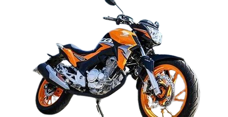
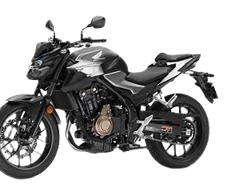
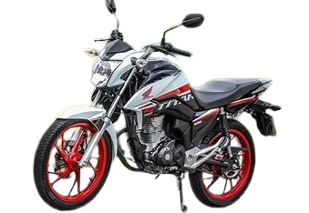
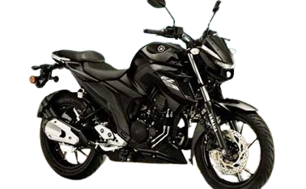

Moto
esse site dara algumas informações sobre motos do cotidiano
Aqui estão algus exemplos
Honda CB Twister

Motor: A CB Twister 300F é equipada com um motor monocilíndrico de 299 cc, refrigerado a líquido, que produz aproximadamente 25 cv de potência máxima
Peso: Seu peso é de cerca de 143 kg, o que a torna ágil e fácil de manobrar no trânsito urbano.
Altura do Assento: A altura do assento é de 784 mm, proporcionando uma posição de pilotagem confortável.
Freios: Possui freio a disco na dianteira e traseira para uma frenagem eficiente.
Consumo de Combustível: A média de consumo é de aproximadamente 30 km/l.
Honda CB 500F

Motor: A CB 500F é equipada com um motor DOHC 4 tempos de 471 cc, entregando mais de 50 cv de potência.
Peso: Com cerca de 190 kg, oferece estabilidade e conforto em viagens mais longas.
Altura do Assento: A altura do assento é de 785 mm.
Freios: Possui freio a disco duplo com sistema ABS para maior segurança.
Consumo de Combustível: A média de consumo é de aproximadamente 25 km/l.
Honda CG 160 Titã

Motor: A CG 160 Titã possui um motor monocilíndrico de 162,7 cc, com potência de cerca de 15 cv.
Peso: Com aproximadamente 121 kg, é uma moto leve e ágil para o uso diário.
Altura do Assento: A altura do assento é de 790 mm.
Freios: Possui freio a tambor na traseira e disco na dianteira.
Consumo de Combustível: A média de consumo é de cerca de 40 km/l.
Yamaha Fazer 250

Motor: A Fazer 250 é equipada com um motor monocilíndrico de 249 cc, com potência de aproximadamente 21 cv.
Peso: Com cerca de 154 kg, oferece equilíbrio entre agilidade e conforto.
Altura do Assento: A altura do assento é de 790 mm.
Freios: Possui freio a disco na dianteira e traseira.
Consumo de Combustível: A média de consumo é de aproximadamente 30 km/l.